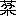
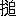

從來漢土儒林の人を觀るに、漢の楊雄程其人物學問に對する評價の一致せぬものはない。一方に於て、孟子以後の第一人と尊崇さるゝかと思へば、また他方では利祿を貪り、權勢に阿り、全く道義羞惡の念なき、人格陋劣のしれもので、其學術亦た淺薄にして見るに足らずと、一概に罵詈をあびせかけられて居る。元來何れの國、何れの時代でも、また帝王政治家學者たるとに論なく、其生時には毀譽相半したものが、どうかの調子で、其人既に沒し、年代を去ること遠くなればなる程、惡い方面が全く忘却されて、善い方面計遺つて、其人を譽る一方となるかと思へば、又た反對に善い方面が年を逐うて忘却され、惡い方面が殘り、獨り殘るのみか、何んでも惡いことゝなると、其人の記臆の上に積重ねらるゝものがある。私が今申述べんとする楊雄の如きは、葢し後者に屬すといふべきである。漢書の中に雄が爲めに傳を立てた班固の考は、如何であつたかといふに、班固とても決して雄を以て完人とした譯ではない。其傳を讀んでゆくと、露骨に雄の惡口をきいては居らぬが、其中に微辭があつて、或點に於て不滿足であつたことは首肯せらるゝが、これと同時に班固とても、雄に對し十分に大儒としての尊敬を拂つて居たことは明である。其後、漢魏から唐までは、どちらかといへば、雄を譽むるものゝ方が多かつた。殊に韓愈の如きは、孟子の事を述べた後に、『晩得二楊雄書一。益尊二信孟氏一。因二雄書一而孟氏益尊。則雄者亦聖人之徒歟。』といひ『孟氏醇乎醇者也。荀與レ楊大醇而小疵。』とまで推稱して居る（讀荀子）。其徒張籍も亦た韓愈に與へた書中に、『執事聰明。文章與二孟軻楊雄一相若。』とか、『後二軻之世一。發二明其學一者。楊雄之徒。咸自作レ書。』などいつて、孟子と並稱して居る（韓文十四張籍遺公第一二書）。柳宗元は、韓愈程には尊ばなかつた樣にも見ゆるが、それでも、法言の注までして居る所から考ふると之を輕視せなかつた事は分る。それから宋となると、かの方正謹嚴の君子司馬光の如きは、尤も楊雄の人物を惡まなくてはならぬ譯であるが、之に反して韓愈が『荀與楊大醇而小疵』の評語に多少不平を抱くまでに尊信し、其太玄法言に注をしたり、又た通鑑の記事中にも、雄の穢迹として傳へられたる點は、すべて刪つて書かなかつた。同時王安石・曾鞏などの學者も楊雄の爲めに辯護の辭をなして居るが、概して宋の時代となると、楊雄を惡くいふものも亦多くなつて來た。殊に義利の別を明にし、綱常名節を重ずる程朱學派にあつては、口を極めて之を詈り、殆んど人間に齒せず、朱子の綱目には『莽大夫楊雄死』とかゝれ、後世曲學阿世の俗儒が出ると、楊雄は必ず引合に出さるゝ事に極まつて居る。或人の説に、宋儒が雄を惡樣にいふのは其人物論からでなく、實は雄の性論が程朱に同からざる故である。宋儒は門戸の見が強い。楊雄に「性に善惡混ずるの説」あり、而してそれが宋儒の性論と一致せぬ所から、之を惡んで其人身攻撃までに及んだといふものがある。併しこれも餘り穿過ぎた見方で、凡そ性論に於て程朱と一致せないのは、漢唐時代の學者多くは然りといつても差支ないが、宋儒は此等の人に對し、楊雄に對すると同一の態度を以て、口穢なく詈つたかといふに左樣でもない。必竟宋儒の一派が楊雄を惡んだのは、元來宋儒の學風は義利の別を嚴にし、苟も名節に於て闕けた人なら、他によい點があつても決して容赦せぬ。人の善を奬めるよりも、其惡を惡む一方に偏して居る。かゝる傾向ある學派に對し、楊雄の出處が不快の念を與へたのは、至當のことで、一度惡いと思つた以上、其宜しく恕すべき點あるをも考へずして、極端に攻撃をしたものであらう。
さて楊雄の人物に就いて非難さるゝは、申すまでもなく、彼が王莽に
 事し、其漢室を簒ふに及んで之れを討伐するとか、又は節に殉ずることもせず、利祿の爲めに之に仕へ、莽の功徳を頌して「劇秦美新」の文を作つたことで、若し其れが事實としたら如何に辯解しても其醜を掩ふことは出來ぬ。殊に「劇秦美新」の如き滿幅諛辭を以て充され、其文が巧い丈、心事の陋劣さが見ゆる譯であるが、後世楊雄を辯護する學者の中には、此文を作つたといふ事實を否定する人がある。それは明の焦
事し、其漢室を簒ふに及んで之れを討伐するとか、又は節に殉ずることもせず、利祿の爲めに之に仕へ、莽の功徳を頌して「劇秦美新」の文を作つたことで、若し其れが事實としたら如何に辯解しても其醜を掩ふことは出來ぬ。殊に「劇秦美新」の如き滿幅諛辭を以て充され、其文が巧い丈、心事の陋劣さが見ゆる譯であるが、後世楊雄を辯護する學者の中には、此文を作つたといふ事實を否定する人がある。それは明の焦 などが一例で、彼は其書焦氏筆乘卷二楊子雲始末辨の條に胡正甫といへるものゝ説を擧げ、雄が莽に事へ、又た劇秦美新を作つた事實を否定せんと試みたが、議論の要點はかうである。それは漢書楊雄傳贊即ち班固が書いた記事の内に
などが一例で、彼は其書焦氏筆乘卷二楊子雲始末辨の條に胡正甫といへるものゝ説を擧げ、雄が莽に事へ、又た劇秦美新を作つた事實を否定せんと試みたが、議論の要點はかうである。それは漢書楊雄傳贊即ち班固が書いた記事の内に
（一）初雄年四十餘。自レ蜀來至游二京師一。大司馬車騎將軍王音奇二其文雅一。召以爲二門下史一。薦二雄待詔一。歳餘奏二羽獵賦一。除爲レ郎。給二事黄門一。與二王莽劉 一並。哀帝之初。又與二董賢一同レ官。
一並。哀帝之初。又與二董賢一同レ官。
（二）年七十一。天鳳五年卒。
の二項がある。この記事を基礎として攷證すると、第一の記事によれば、雄が四十餘歳にして初めて京師に來たのは、成帝の時でなければならぬ。何如となれば上記王音が大司馬車騎將軍の職に居たのは成帝のときであり、又た漢書の記事に先づ雄が京師に出でゝ王音の引立に逢つたことを敍し、然後「哀帝之初」云々と言つて居る。文章前後のかゝりから見ても、雄が京師に來たのは、哀帝の前、即ち成帝のときとせねばならぬ。然るに胡正甫に言はせると、右の事實が第二の記事と合はぬ。何如にとなれば成帝の建始元年より楊雄が死んだといふ天鳳五年まで五十二歳を經て居る（胡正甫以て五十二歳となせど、實は五十歳なり、胡説誤れり。）。然るに其京師に初め遊びしとき年四十餘とあるから、雄が死んだときは、百歳に近くなくてはならぬ（胡は二歳多く計算せり、然れども其結論には影響なし。）。胡正甫は元來から楊雄が劇秦美新を作つた事實を否定しようといふ目的があるから、第二の記事中、「年七十一」といふ年壽を動かすべからざるものとなし、天鳳五年に死んだとすれば、年壽百歳に近くなる勘定だから天鳳五年といふことが當にならぬ。どうしても楊雄は天鳳五年（王莽即位後十年）よりずつと前、即ち王莽がまだ漢室を簒はぬ時代に終つたものとせんければならぬ。さうであれば彼れが莽に諂事したといふのも、全くの寃罪であつて、「劇秦美新」が彼の作でないことも自ら明白であると、胡正甫は言つて居る。胡は又或人の説を引いて、莽の同時代に谷永字は子雲といふ文士があつた。此れは其傳によれば、王氏一族に取入つた人で、劇秦美新を作りかねまじき文才と心術を有つて居た。そこで元來あの文は、谷永の作であつたのが、其字が子雲といつた所から、つい楊雄の作といふことになつたのであらうと云つて居る。併し胡説は誠に巧く出來てゐるやうであるが、四庫提要にも駁してある如く、胡の計算が元來間誤つて居る。彼れは雄が京師に來たのを成帝の時にありとなす理由から、其即位の建始元年より數へて、天鳳五年まで五十二歳として居るが其計算法が宜敷ない。一體漢書楊雄傳には班固が明に雄の卒年を天鳳五年、其壽は七十一と言つて居るのに、自分が辨證の都合から、年壽丈を取つて卒年を取らぬは、我儘勝手と言はねばならぬ。班固は父彪の業を嗣いで、漢書の大著述をした人である。而して父子の時代と楊雄とは相距ること甚だ遠くはない。卒年年壽とも何か慥かな根據あつて書いたものと思はる。それで他の精確な材料があつて卒年年壽を均しく捨つるなら兎も角、自己の説を成立させる爲め、一方のみを取つて他方を捨つるのは宜しくない。又た此處に考へなくてならぬ事は、楊雄を引立てた王音が大司馬車騎將軍に命ぜられたのは、成帝の陽朔三年で同じく永始二年に在官の儘薨去してゐる（成帝紀、元妃傳）。故に雄が京師に來り、其引立に逢つたとすれば、雄の入京を陽朔三年より永始二年までとしても差支ない。そこで又た一方では班固が書いた雄の卒年年壽を兩つながら正しきものと見て、天鳳五年より七十一歳丈、上に溯ると彼れは宣帝の甘露元年に生れたことになる（錢大一並。哀帝之初。又與二董賢一同レ官。（二）年七十一。天鳳五年卒。
 續疑年録亦之に從ふ。）。この甘露元年に生れた説を確かむる證據には、文選卷四十六任
續疑年録亦之に從ふ。）。この甘露元年に生れた説を確かむる證據には、文選卷四十六任 の王文憲集序に於ける李善注に、『子雲家牒言、以二甘露元年一生』といふ七略の語を引いて居る。一體この七略とは何をさすか、若し劉の七略とすれば、それに引ける家牒なるものは、充分に信を置いてよい。又さうでないとしても、已に李善が引いて居るから、唐以前のものといふ丈は確かである。而してそれが今予が述べた如く、班固の書いた雄の卒年年壽より逆算したものと一致するのは面白いことである。唯具合の惡いことは、此の計算法により雄を甘露元年に産れたとすると、王音が大司馬大將軍となつたとき雄の年は三十二、其薨去せしときは三十九であつて、まだ四十を越して居なかつたことゝなる。それでは又た漢書に四十餘で京師に來たといふ記事と合はぬ。これにつき近頃周壽昌の如きは、古の四といふ字は※［＃「二／二」、U+4E96、167-2］に作り、三の字と一本棒が少ない丈であつた。それで元來漢書の記事は三十餘とあつたのを、傳寫の際誤つて一を加へそれから四十餘と間誤つたのであらうと云つて居る（王先謙漢書補註に引くものによる。）。成程かくの如く見て「三十餘」とすれば年代が合ひ、漢書所記の雄が卒年年壽を兩方とも動かさずして、濟む譯である。而して筆乘の辯護説も成立たぬことになる。
の王文憲集序に於ける李善注に、『子雲家牒言、以二甘露元年一生』といふ七略の語を引いて居る。一體この七略とは何をさすか、若し劉の七略とすれば、それに引ける家牒なるものは、充分に信を置いてよい。又さうでないとしても、已に李善が引いて居るから、唐以前のものといふ丈は確かである。而してそれが今予が述べた如く、班固の書いた雄の卒年年壽より逆算したものと一致するのは面白いことである。唯具合の惡いことは、此の計算法により雄を甘露元年に産れたとすると、王音が大司馬大將軍となつたとき雄の年は三十二、其薨去せしときは三十九であつて、まだ四十を越して居なかつたことゝなる。それでは又た漢書に四十餘で京師に來たといふ記事と合はぬ。これにつき近頃周壽昌の如きは、古の四といふ字は※［＃「二／二」、U+4E96、167-2］に作り、三の字と一本棒が少ない丈であつた。それで元來漢書の記事は三十餘とあつたのを、傳寫の際誤つて一を加へそれから四十餘と間誤つたのであらうと云つて居る（王先謙漢書補註に引くものによる。）。成程かくの如く見て「三十餘」とすれば年代が合ひ、漢書所記の雄が卒年年壽を兩方とも動かさずして、濟む譯である。而して筆乘の辯護説も成立たぬことになる。併し此丈では、雄が果して王莽簒位後まで生存せしか否の問題を決するには、證據不十分であるが、これを決するには矢張漢書をかいた班固の考によらなければならぬ。
班固は雄の傳中に、其劇秦美新の文を擧げず、又た雄が之を書いたといふ事も明言して居ないが、彼が慥かに王莽の頌徳表たる此文の作者を楊雄としてゐた事は、他の方面から明かである。例せば固の典引の序に「伏惟相如封禪。靡而不レ典。楊雄美新。典而亡レ實」（文選四十八）と言つて居る所から見ても彼れは美新の作を以て雄の手になつたとしてゐる。唯彼れが此事實を雄傳に入れないのは、雄が爲めに諱んだものと見ねばならぬ。又た彼れはかく諱んで美新の文を載せぬが、同時に傳贊即ち彼れの記事文のうちには（本傳は楊雄の自敍を其儘採録して居る。）、雄が天祿閣から落ちた事件を擧げて居る。それは王莽が漢室を簒んとした時、天意が彼の身にありといふ事を示さんとして腹心のものに符命を作らせた。恰も先年袁世凱が皇帝の位に即かんと欲して、其乾兒に命じて四方から推戴の電報を僞造せしめたと同一の筆法である。そこで其意を承けて、段々と符命を作つたものがあり王莽も目的を達して天子となつたが、最早符命の必要はない。却つて餘り作るときは、馬脚を露はす虞があるので、之を嚴禁したが、猶無耻な小人輩は莽の意を迎へて、幾許かの恩賞に與からんとの私慾心から符命を作つて上つた所が、莽の怒に觸れ逮治された内に劉といふものがあつた。これは楊雄の友、劉
の子で雄とは師弟の關係があつた所から、雄も連累者として捕手に襲はれた。當時雄は天祿閣で校書をして居たが、捕手が來たので、急遽の際、閣上から飛降りた爲め、怪我して幾んど死なんとした珍事がある。そこで口さがない京童共が「惟寂寞自投レ閣。爰清靜作二符命一。」といふ謠を作つて囃立てたといふことであるが、これは雄が有名な作、「解嘲」に「爰清爰靜。遊二神之廷一。惟寂惟寞。守二徳之宅一。」とある文句をもじつて冷かしたものであるが、注家の説では符命を作るといふは、彼れが「劇秦美新」を作つたことを意味するものとしてある。又た新室文母太后誄といふ楊雄の作がある。文母太后といふは漢元帝の后王氏、即ち莽の叔母に當る人で、王氏からこの皇后を出した爲め其一族が外戚を以て權を恣にすることが出來莽に至つて遂に漢室を簒つた譯である。かくの如く王莽から見るとこの皇太后は極めて大切な人であるが、漢亡びた以上皇太后の尊號を其儘保存することは出來ぬ。そこで種々思案の結果「新室文母皇太后」と云ふ變な名を上つたが、この人は莽が帝位に即いた後まで生存し、建國五年に崩御された。漢書元后傳によると、その時王莽は大夫楊雄に命じて、誄を作らしめた、而して其一節は漢書に載せられてある（全文は藝文類聚、古文苑等に載す。）。これ亦た雄が莽即位の後まで生存して居た證據となすことが出來よう。又前に擧げた劇秦美新を谷永の作とし、其字の子雲であつた處から楊雄と混同したといふ説は全く成立せない。何となればこの谷永こそ王莽がまだ大司馬とさへならぬ前に、死亡して居るから、此人が其文を作つたといふは、到底有り得べからざることで、彼れ楊雄が莽に事し、其漢室を簒ふに及び、劇秦美新を作つた罪は、決して免るゝ事が出來ないのである。然らば楊雄は或人の論ずる如く、全く廉耻心のない、名節の何たるを知らぬ、人格劣等の人と一概に見るべきかといふに、必ずしもさう計り言へない節がある。先づ試みに彼が作つた解嘲を讀んで見ると全篇彼れが貧乏に對する辨疏であるが、其序文に
哀帝時。丁傅董賢用レ事。諸附二離之一者。或起レ家至二二千石一。時雄方草二太玄一。有二以自守一。泊然也。或嘲レ雄以二玄尚白一。而雄解レ之。號曰二解嘲一。
とある、彼れは解嘲に於いて、人には各立場があつて、貧賤の毫も耻るに足らぬことを述べ、學者としての大氣焔を擧げて居る。從來評家の言つて居る通り、韓愈進學解は全くこれを粉本としたもので、とも角此文によると、丁董等が權威薫灼せるときに、獨り著述に耽り、何等營求する所がなかつたとしてある。それから王莽の時代となつても、其態度は同樣であつた。漢書本傳によると、初め雄が、黄門郎となつたときは、王莽劉と並び、哀帝の初には、董賢と同官であつたが、未だ幾ならずして彼等は皆顯貴の地位に上つたけれど、雄のみは相變らず貧乏生活を續けて居た。漢書本傳に
當二成哀平間一。莽賢皆爲二三公一。權傾二人主一。所レ薦莫レ不二拔擢一。而雄三世不レ徙レ官。及二莽簒一レ位。談説之士。用二符命一稱二功徳一獲二封爵一者甚衆。雄復不レ侯。以二耆老一久次轉爲二大夫一。恬二於勢利一乃如レ此。
と言つて居る。之を要するに、初めは王莽董賢劉等と同官であつたが、賢は男色を以て哀帝の時大司馬となり、王莽は大司馬から天子となり、劉も莽の御用學者として、國師公まで上つた。又た莽のときは符命を作り、莽の功徳を稱した爲め、封爵を獲たものが衆かつたが、雄のみは下位に沈淪して、やつと老年の故を以て、大夫までなつた丈で、それでも本人は滿足して居たとある。又傳によれば、一生貧乏で、好物の酒も買つて飮めなかつたといひ、死んだとき子供もなく、門人侯芭が葬式萬端を取賄つたといふ話さへ傳はつて居る。若し一般に信ぜられたる如き卑陋な人物であつたなら董賢の時、若しくは王莽の得意時代に、縁故を頼つて取入り他の人々と同じく富貴榮華に誇りさうであるが、之れに反し、矢張り貧賤に安じ、 々として學問計りやつて居た。一方では王莽に諂つた人格劣等のものと、後世から散々に罵られ、又た一方から彼れが實際生活を見ると、下位に沈淪し、貧乏で酒代にまで窮したといふ事になれば、此程損な役割はない。劉は楊雄に比しもつと卑劣な人間で、父劉向などゝは、雪と炭程の差があつたけれど、雄ほどに後世からは責られぬ、凡そ古文學派の經學は源をから發して居る譯であるからか分らぬが、餘り後世から其人物を攻撃せぬやうである。雄の傳によると、前述の符命事件で、投閣騷があつたとき、王莽が「雄はこれに關係ない筈だ」といつて雄を調らぶる事を止めさせたといふ事はあるが、莽が雄へ對する態度はかくの如きもので、別段に目をかけてやつた形迹を認むることが出來ぬのは、甚だ不思議と言はねばならぬ。
々として學問計りやつて居た。一方では王莽に諂つた人格劣等のものと、後世から散々に罵られ、又た一方から彼れが實際生活を見ると、下位に沈淪し、貧乏で酒代にまで窮したといふ事になれば、此程損な役割はない。劉は楊雄に比しもつと卑劣な人間で、父劉向などゝは、雪と炭程の差があつたけれど、雄ほどに後世からは責られぬ、凡そ古文學派の經學は源をから發して居る譯であるからか分らぬが、餘り後世から其人物を攻撃せぬやうである。雄の傳によると、前述の符命事件で、投閣騷があつたとき、王莽が「雄はこれに關係ない筈だ」といつて雄を調らぶる事を止めさせたといふ事はあるが、莽が雄へ對する態度はかくの如きもので、別段に目をかけてやつた形迹を認むることが出來ぬのは、甚だ不思議と言はねばならぬ。話はこれから進んで、雄の著述たる法言の事を申述べたい。法言は申すまでもなく、彼れが孔子の道を明にする目的を以て、論語に擬して作つたもので、格言集として見たら誠に立派なもので、其文簡奧にして力あり、如何にも楊雄の如き學殖があつて、始めて出來たと思はるが、餘り論語の眞似をなし、其語法句法までそつくり取つて、徒らに其皮相を學ぶに汲々たる所は面白くない感を與ふるのである。さて此書を讀んで見ると、從來の學者も已に注意した通り、王莽に對する彼の批評、若しくは惡口を言つたと思はるゝ文句が、各處に散見して居る。勿論明白に文字の上に顯はれて居ないが、能く讀めば、恰も王莽を刺つたものと思はれる所がある。それは何かといふに、法言のうちで、彼れが人間道徳のうちで、尤惡徳として嫌つて居るのは、己れ君子の實なくして、君子の眞似をする、所謂僞道徳家であつて、之を罵つた所が書中に多い。例へば重黎篇に、
或問。南正重司レ天。北正黎司レ地。今何僚也。曰。近レ羲近レ和。孰重孰黎。曰。羲近レ重。和近レ黎。或問二黄帝終始一。曰。託也。昔者 氏治二水土一。而巫歩多禹。扁鵲盧人也。而醫多盧。夫欲レ讎レ僞者心假レ眞。禹乎盧乎。終始乎。
氏治二水土一。而巫歩多禹。扁鵲盧人也。而醫多盧。夫欲レ讎レ僞者心假レ眞。禹乎盧乎。終始乎。
とあつて、晉の李軌が注に、氏治二水土一。而巫歩多禹。扁鵲盧人也。而醫多盧。夫欲レ讎レ僞者心假レ眞。禹乎盧乎。終始乎。
言二皆非一也。於レ是捨レ書而歎曰。深矣楊子之談也。王莽置二羲和之官一。故上章寄二微言一以發二重黎之問一。而此句明言二眞僞之分一也。
と言つて居る。結局李軌の考では、此二章は意味聯屬したもので、古昔
 が南正重に天を司らせ、北正黎に地を司らしたが、後堯の時に至り羲和の官が出來て、天地を分掌することゝなつた。王莽が其眞似をして又た羲和の官を立てた。文中に「今何僚也」即ち南正重北正黎を今の官にあてたら、何の官に當るかと疑問をかけて、羲和を引出して居るが、此文では其羲和が堯の羲和の事やら、王莽の義和の事やら明白に分らぬやに見ゆるが、「今」の字を味へば、楊雄の時代、即ち王莽が置いた官であることは、推測さるゝのである。かく王莽のことを提起して、然後次章に於いて、抑
が南正重に天を司らせ、北正黎に地を司らしたが、後堯の時に至り羲和の官が出來て、天地を分掌することゝなつた。王莽が其眞似をして又た羲和の官を立てた。文中に「今何僚也」即ち南正重北正黎を今の官にあてたら、何の官に當るかと疑問をかけて、羲和を引出して居るが、此文では其羲和が堯の羲和の事やら、王莽の義和の事やら明白に分らぬやに見ゆるが、「今」の字を味へば、楊雄の時代、即ち王莽が置いた官であることは、推測さるゝのである。かく王莽のことを提起して、然後次章に於いて、抑 世間には禹の眞似をしたり扁鵲の眞似をするものが多いが、眞物と僞物とは全く性質を殊にし、到底同一視することは出來ぬとの理窟を述べて居る。又た問神篇に
世間には禹の眞似をしたり扁鵲の眞似をするものが多いが、眞物と僞物とは全く性質を殊にし、到底同一視することは出來ぬとの理窟を述べて居る。又た問神篇に
或問レ人。曰。艱レ知也。曰焉難。曰太山之與二※［＃「虫＋豈」、U+8798、171-7］垤一。江河之與二行潦一。非レ難也。大聖之與二大佞一難也。烏呼能別二似者一。爲レ無レ難。（諸本異同あり今宋治平監本に從ふ。）
の文あつて、宋呉祕は之に注して、
若下周公忠勤而被二流言一。王莽折レ節以鼓中虚譽上。
と言つて居るが、祕も楊雄が
或曰。有レ人焉。自云二姓孔而字仲尼一。入二其門一。升二其堂一。伏二其几一。襲二其裳一。則可レ謂二仲尼一乎。曰。其文是也。其質非也。敢問レ質。曰羊質而虎皮矣。見レ草而説。見レ豺而戰。忘二其皮之虎一矣。
これも人が如何に眞物を似せても、僞物は要するに僞物で、何時かは地金をあらはすとの意味で、汪氏は之を以て均しく王莽を刺つたものとして居る。其外に尚眞物僞物の論が澤山ある所から考ふると莽に對する雄の微辭であることは、疑を容れぬやうである。法言に眞僞の別をいふ事が、何故に王莽を刺つた事となるかといへば、其れは申す迄もなく、王莽が有名な僞善家であつたからである。今漢書本傳に據り其經歴を考へて見ると、彼れは徹頭徹尾虚僞を以て固めた人物である。彼は其羣兄弟が輿馬聲色の好に耽るに當り、節を折つて恭儉の行をなし、學を好み師を禮し、母に孝を盡くし、寡嫂孤兄の子を勞はり、外には英俊に交はり、朝にありては直論をなす等、所有君子の眞似をなした爲め、元后初め一族の信用は勿論、天下の耳目を瞞着し、遂に毒牙をあらはして漢室を簒つた。併しそれでも直に皇帝の位には即かず、古昔周公が成王に代つて政を攝した故事に則とり、當時義士が莽に對して兵を擧げたのを討伐するにも、周公が管蔡を討つた態度を氣取り、周書大誥に傚つて、大誥を作つた。又孺子を廢して皇帝となるに及び、劉
の説を用ひ、周官に本づいて官制を改め、太平を粉飾したが、後には周公でも滿足が出來ず、自ら黄帝の裔にして、虞舜の後なりといひ、虞舜の姓は元來姚であつて、後に といひ、周にありては陳、齊にありては田、濟南にあつては王といふ、尚書にも「惇序二九族一」といふ事あれば、この五姓を以て宗室となすべしといひて、自ら堯の禪をうけた虞舜の氣取をした。此等の事實から考へて見ると、法言に言つて居るものが必ずしも漫然僞善家僞君子を刺つたものとは言はれぬのである。
といひ、周にありては陳、齊にありては田、濟南にあつては王といふ、尚書にも「惇序二九族一」といふ事あれば、この五姓を以て宗室となすべしといひて、自ら堯の禪をうけた虞舜の氣取をした。此等の事實から考へて見ると、法言に言つて居るものが必ずしも漫然僞善家僞君子を刺つたものとは言はれぬのである。勿論前に擧げた法言の文には、王莽の名を出して居らぬが、唯其外一箇所丈莽の號が出てゐる。而して其處では又た大層之を頌美して居る。
周公以來。未レ有二漢公之懿一也。勤勞則過二於阿衡一。
漢公とは、即ち安漢公王莽の事で、之を以て伊尹周公に比してあるが、若し前に擧げた文が王莽を刺つたものとせば、兩者矛盾する事甚しい、是れは誠に分らぬ事である。そこで或人はかういふ話を傳へて居る。楊雄は資性恬淡寡營の人で、文を作るにも有の儘を敍し、人に頼まれたからといつて、虚美をせぬ所から、世人の怨を招き、彼れが死んだ後、平生怨を抱けるものが其名節を毀損する爲め、前の十八字を加筆したが、實は雄の原書にはなかつたのであるといふ事である（説郛所輯潛居録）。併し此話は全く小説で信じ難く、矢張り法言の原書が、さうであつたと見ねばならぬ。然らば雄は何故に一方では莽を刺り又一方ではかゝる諛辭を書いたかといふに、それは兪 汪榮寶などのいふ如く、一種王莽に對する皮肉の辭と解したがよいと思ふ（諸子平議法言疏證）。一體法言は雄の著述で晩年の作であつて、勿論王莽が新室の眞皇帝となつた後に出來たものである。然るに雄は
汪榮寶などのいふ如く、一種王莽に對する皮肉の辭と解したがよいと思ふ（諸子平議法言疏證）。一體法言は雄の著述で晩年の作であつて、勿論王莽が新室の眞皇帝となつた後に出來たものである。然るに雄はかくの如く法言を解して來ると、何故に一方では婉約の間に王を刺りながら、一方に於ては之に
事し、劇秦美新を書くやうな無耻の事をやつたかといふに、私は其處が即ち雄の雄たる所以であつて、其れには少なくとも二の原因があると思ふ。雄がこの曖昧な態度が、誠に臆病で醜き事は勿論であつて、之を辯護することは出來ぬが、かの劉などに比較すると多少恕すべき點があると思ふ。二原因のうち、第一に私は彼れが黄老的の思想に就いて申述べたい。勿論彼れは、孟子が楊墨を闢いた事を述べ、窃に第二の孟子たる抱負をほのめかし、孔子の教と老莊申韓とを比較するときは、常に一方を揚げ他を抑へて居るが、又た同時に書中に於いて老子を尊ぶの口吻をなして居る。例せば問道篇に、
老子之言二道徳一。吾有レ取焉耳。及下二提仁義一。絶中滅禮樂上。吾無レ取焉耳。
とあつて、司馬光は之に虚靜謙柔なる四字を注して居る。即ち彼れが老子を取つたのは、其虚靜謙柔を教へて居るからである。又た彼れは同じく問道篇に
或曰。莊周有レ取乎。曰。少レ欲。
とあつて、これも彼れが老子を尊んだり、又た谷口の鄭子眞などの隱者を稱揚したのと同一筆法で、亂世にあつて節義を守り、身を殺して仁を成す如き烈士風の行は、彼の性質上出來ぬことであり、又た喜ばぬ所で、それよりも司馬光の所謂虚靜謙柔即ち世にありて利祿を營求せず、さりとて又た小人奸邪の輩に對して言論若しくは實行を以て之に忤らふ態度もとらず、世と浮沈して一身を保全するのを善い事に思つたやうである。即ち書中に散見する、
或問レ活レ身。曰明哲。或曰。童蒙則活。何乃明哲乎。曰。君子所レ貴亦越用レ明保二愼其身一也。（問明）
或問二君子在一レ治。曰。若レ鳳。在レ亂。曰若レ鳳。或人不レ諭。曰。未二之思一矣。曰治則見。亂則隱。鴻飛二冥冥一。弋人何簒焉。（同）
の如き皆明哲保身の事を述べたもので、從つて讒に遭ひ家國を懷うて遂に身を汨羅に沈めた熱狂的な屈原の如きものは、其の與みする所でなかつた。或問二君子在一レ治。曰。若レ鳳。在レ亂。曰若レ鳳。或人不レ諭。曰。未二之思一矣。曰治則見。亂則隱。鴻飛二冥冥一。弋人何簒焉。（同）
或問。屈原智乎。曰。如レ玉如レ瑩。爰變二丹青一。如 其レ智ナラム。如 其レ智ナラム。（吾子）
屈原の志は玉の瑩くが如く、誠に潔白にして渝ることがない。其點から云へば、丹青などの久しくして色を變ずるものとは同日の論でない。併し「智」であるか何如といはゞ、智を以て之れに許すことは出來ないといふのである。彼れは又た屈原の離騷に對し、反離騷を作つた。屈原の境遇には滿腔の同情を表しながら、其行爲には贊成して居らぬことが序文に能く見ゆるのである。
又怪屈原文過二相如一。至下不レ容作二離騷一自投レ江而死上。悲其文讀レ之未二嘗不一レ流レ涕也。以爲君子得レ時則大行。不レ得レ時則龍蛇。遇不遇命也。何必湛レ身哉。
かゝる考があればこそ、彼は王莽の時に當り強て其怒を招くやうな事をせず、俗と浮沈して居た。彼れは當時盛名があつたから、若し少しでも莽の命に從はぬことあらば、禍を取ることは明白である。それで不本意ながらも、劇秦美新を書き、又た文母太后の誄も草したが、一方では莽に感服せぬ意味を、法言の中に寓したと見るべきであらう。彼の取つたかゝる態度は、其臆病怯懦からも來て居やうが、其重なるものは、老子の明哲保身主義が影響をしたと見る事が出來る。朱子は雄の學に老子の影響あることを注意し、
楊雄全是黄老。……楊雄直是一腐儒。他到二急處一。只是投二黄老一。
雄之學似レ出二於老子一。如下太玄曰潛二心于淵一。美二厥靈根一。測曰潛二心於淵一。神不レ昧也上。乃老子説話。
なりといひ、又解嘲中の爰清爰靜云々の文句も、矢張老子の思想から出たと言つて居る（朱子語類百三十七）。又た漢書によれば、雄は蜀にありしとき、隱者嚴遵君平を師とした。遵は成都で賣卜を業として居たが、其傍に老子を講じ、道徳指歸論などの著述があつた。雄が後に京師に來たとき朝の士大夫に、遵の學行を話聞かした所から其名が世に播つたとある（漢書王吉傳）。是等の點から考へても、彼れが老子の「謙柔」とか、「不三敢爲二天下先一」などいふ所を學びて、王莽に反對せざりし所以が分るやうである。雄之學似レ出二於老子一。如下太玄曰潛二心于淵一。美二厥靈根一。測曰潛二心於淵一。神不レ昧也上。乃老子説話。
今一つ考へねばならぬ事は、彼れは晩年こそ學者として聲名を馳せたが、元來は賦家として立つたものである。本傳に据ると、彼れは同郷の先輩司馬相如を慕ひ、其賦の弘麗にして温雅なるを壯なりとして毎に之を擬し、又た彼れが仕へて郎となつた立身の緒も、羽獵賦を奏したからとなつて居る。彼れはかくの如く賦家として身を立てゝ居たが、後に賦に對して疑を抱いて來た。それは何故かといふに、元來賦は風、即ち諷刺を目的となすもので、縱令如何に麗靡の辭を極め、
 侈鉅衍の數々をつくして、文字の技巧を競つても、要するに覽者をして正道に歸せしむるを主眼とする。然れども覽者にありては唯其浮華なる文辭に眩惑されて、諷諫の意を領悟せぬ。昔司馬相如は武帝が神仙を好むを以て之を風せむとて、大人賦を作りて上つたが、其文辭餘りに麗なりし故、却つて帝をして縹々として雲を陵ぐの志を起さしめた。是に由りて見れば、賦を作つて人をして正に歸せしめんとしても、反對の結果を招くことがある。又文字を巧にして、人主を喜ばせようとする態度は、頗る俳優淳于
侈鉅衍の數々をつくして、文字の技巧を競つても、要するに覽者をして正道に歸せしむるを主眼とする。然れども覽者にありては唯其浮華なる文辭に眩惑されて、諷諫の意を領悟せぬ。昔司馬相如は武帝が神仙を好むを以て之を風せむとて、大人賦を作りて上つたが、其文辭餘りに麗なりし故、却つて帝をして縹々として雲を陵ぐの志を起さしめた。是に由りて見れば、賦を作つて人をして正に歸せしめんとしても、反對の結果を招くことがある。又文字を巧にして、人主を喜ばせようとする態度は、頗る俳優淳于 優孟の類に似て、君子の爲すべきものにあらずとの意見で、賦を作ることを止めたことが、雄の本傳に出て居る。法言吾子篇に「或問。吾子少而好レ賦。曰然。童子彫蟲篆刻。俄而曰。壯士不レ爲也。」と全く同一の意味である。かくの如く、彼れは後に賦家たりしことを悔いたのであるが、元來賦を以て立つた人であるから、其結習を容易に除去することは出來ぬ。それで法言の如き理を述ぶべき文に於ても、明白に其意をばあらはさず、隱約の間にふはりと言ふやうな賦を作ると同一の態度を取つたものではなからうか。若し然りとすれば、其れは雄が大なる心得違で、賦には賦の體あり、一家言を論述するには又た論述の體があつて、兩者を混同することは勿論惡い。併し有名な賦の作家であつた處から、其心持が不知不識の間に法言にも出たものではあるまいか。
優孟の類に似て、君子の爲すべきものにあらずとの意見で、賦を作ることを止めたことが、雄の本傳に出て居る。法言吾子篇に「或問。吾子少而好レ賦。曰然。童子彫蟲篆刻。俄而曰。壯士不レ爲也。」と全く同一の意味である。かくの如く、彼れは後に賦家たりしことを悔いたのであるが、元來賦を以て立つた人であるから、其結習を容易に除去することは出來ぬ。それで法言の如き理を述ぶべき文に於ても、明白に其意をばあらはさず、隱約の間にふはりと言ふやうな賦を作ると同一の態度を取つたものではなからうか。若し然りとすれば、其れは雄が大なる心得違で、賦には賦の體あり、一家言を論述するには又た論述の體があつて、兩者を混同することは勿論惡い。併し有名な賦の作家であつた處から、其心持が不知不識の間に法言にも出たものではあるまいか。一概に身命を惜み、危難を懼れ、
（大正十二年八月、支那學第三卷第六號）